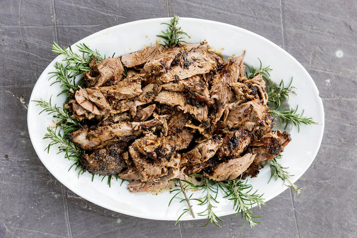

Shawarma Recipe

Easy to make chicken shwarma need needs little bit of technique to get maximum flavour. Served with rice/fries
and veggies. White sauce and red sauce for extra PUNCH!
Ingredients
- Chicken thighs
- Garlic
- Lemon zest and juice
- Cumin seeds
- Mayonnaise
- Cloves
- Salt
- Pepper
Steps
- Mortal and pestle cumin seeds, garlic and cloves.
- Mix mayonnaise, lemon zest, juice of lemon and garlic mixture together. Combine thoroughly.
- Add salt and pepper.
- Cut thighs length wise and combine with marinade. Let set for few hours.
- Add olive oil and cook chicken in batches on cast iron, get good browning.